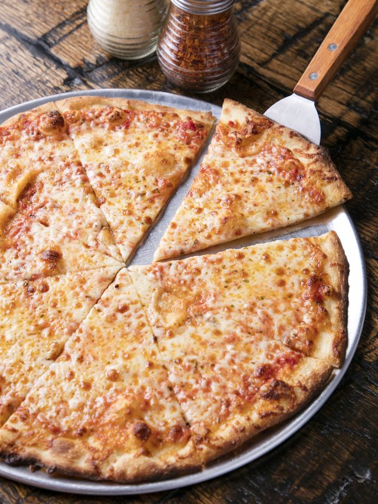

Pizza

Description
Pizza is one of the world's favorite food items. From delicious New York style, to Chicago style,
you can't go wrong.
For this recipe we will be looking at a New York style recipe, and we will keep it simple with the flavor:
cheese pizza! We will use ingredients that are fresh, easy to find, and affordable that you
can cook at home with your family. We hope you enjoy the recipe as much as we do, let's get started!
Ingredients
- 1 c. pizza suce
- 8 oz. provolone cheese, thinly sliced
- 2 c. shredded low-moisture whole-milk mozzarrella cheese
- 6 tbsp. grated parmesan cheese
Ree's Homemade Pizza Dough
Steps
- Divide dough in half and let come to room temperature, uncovered, about 1 hour. Place a pizza stone or an inverted baking sheet on the oven floor and preheat to 500˚.
- On a lightly floured surface, stretch or roll out 1 piece of dough into a 12-inch round, about 1/8 inch thick. Dust a pizza peel or another inverted baking sheet with cornmeal and lay the dough on top.
- Spread half of the sauce on the dough, leaving a 1/2-inch border around the edge. Top with half of the provolone, then with half each of the mozzarella and parmesan.
- Slide the pizza onto the hot stone or baking sheet and bake until the crust is browned and the cheese is melted, 10 to 12 minutes. Repeat with the remaining dough and toppings. Makes 2 12-inch pizzas.
Congrats! You have now successfully created your very own pizza. Feel free to check out out other recipes by revisiting our homepage.